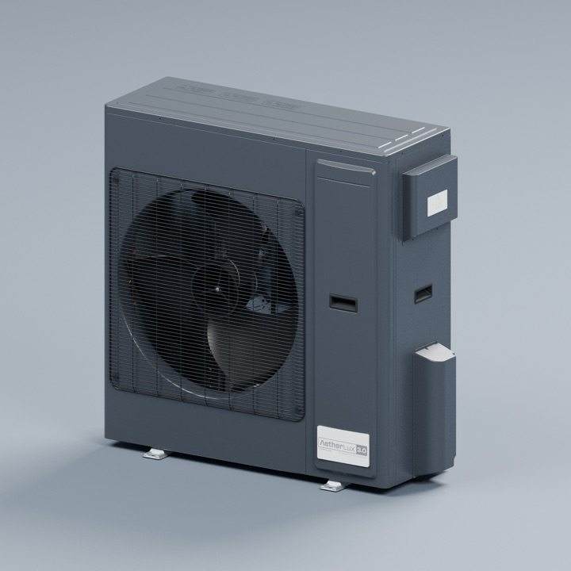
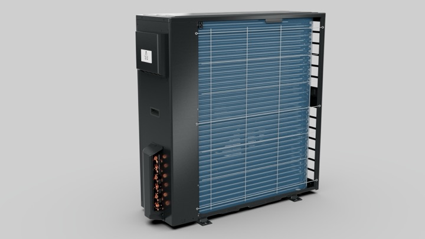
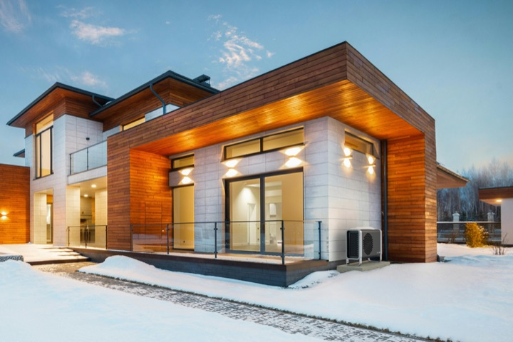
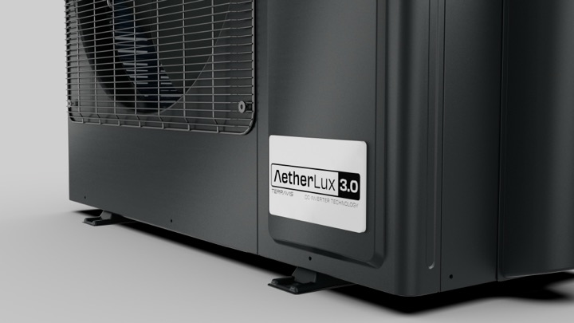
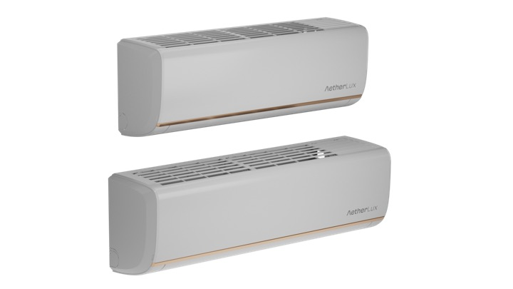

Brand guide
Terravis
Energy
Brand Guide
Edition 2026. Logo, colour, typography and naming for Terravis Energy, AetherLux™ and ZeroFrost™, matching terravisenergy.com and the AetherLux launch material. Terravis Energy is a subsidiary of Worksport Ltd. (Nasdaq: WKSP).
02 · Logo
The Terravis Energy logo
The logo is the emblem (a yellow power ring on a black disc) with the TERRAVIS word-mark and ENERGY in Terravis Yellow. It lives on black. On light backgrounds the word-mark turns black; in the full-colour logo the emblem and the yellow ENERGY keep their colour.
On white or light backgrounds.

Over photography, on a darkened area only.
02 · Logo
The mono mark
A single-colour version of the logo, emblem, TERRAVIS and ENERGY in one colour with the tagline and rule removed, is approved for small sizes, navigation bars, favicons and app headers, single-ink printing, embroidery and engraving, and for sitting over photography where yellow would fight the image. Use it white on dark and black on light. It is the only approved recolour of the mark; never set it in yellow or blue, and never mix mono and full-colour elements.
Mono over photography, as on the media room.
Downloads About AetherLux
Mono in a navigation bar, under 30 px tall.
04 · Colour
Colour
Black is the canvas. Terravis Yellow is the one accent on corporate material; ZeroFrost Blue belongs to the technology. White carries the type. Greys come from the AetherLux hardware itself.
Terravis Yellow#FFCE2D · RGB 255 206 45
Black#000000 · UI surfaces #151517, #1D1D20
ZeroFrost Blue#1AA7E6 · technology mark only
White#FFFFFF · type on black
Unit graphite#3C434C · the AetherLux outdoor unit
Light grey#C9C9CD · secondary text on black
06 · Imagery
Imagery
AetherLux imagery is clean 3D product rendering: the graphite outdoor unit on neutral or dark backgrounds, in-situ renders at a home in winter and summer, and cutaways that show the engineering. Cold weather is the context; the unit is calm inside it.
- Product on dark or neutral grey, lit from above; no lifestyle clutter.
- Winter scenes carry the message. Summer scenes show cooling and range.
- Cutaway and exploded renders are illustrative; internal finishes are not final.
- Type over imagery sits on a darkened area in white, with yellow for the one number that matters.
Where the files live
- Terravis media room: logos, renders and this guide.
- Master files: TerravisEnergy SharePoint › 05_Marketing › 1. TVE Media Asset Folder, and Box › Marketing › 1. Corporate Branding › Terravis Energy.




Questions about the brand: theskar@worksport.com · Terravis Energy, a subsidiary of Worksport Ltd. · terravisenergy.com